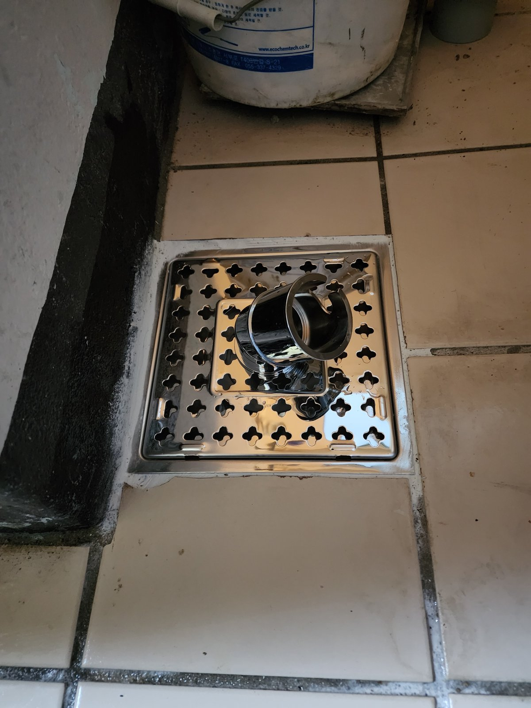
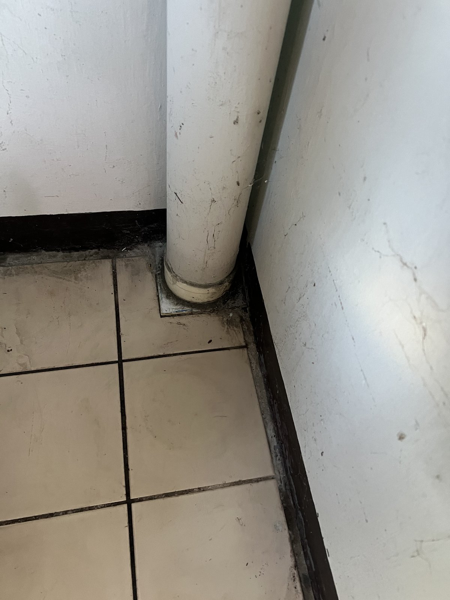
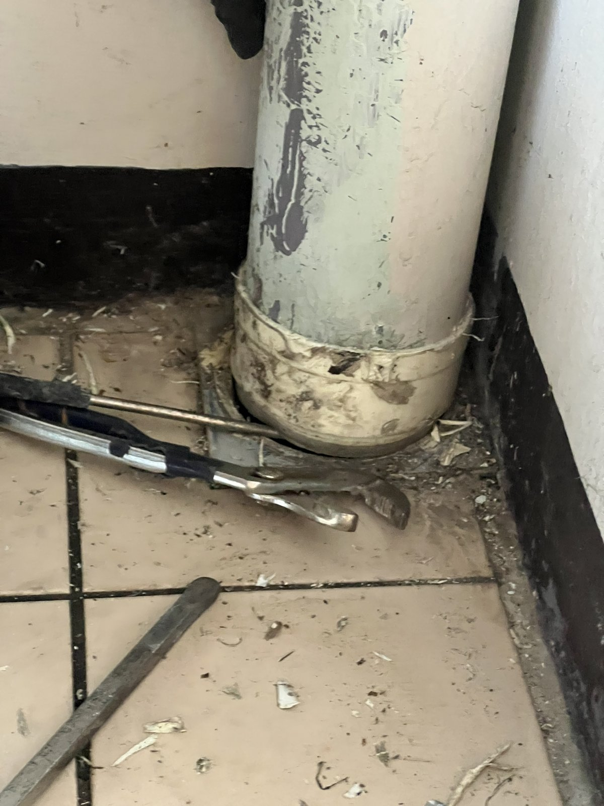
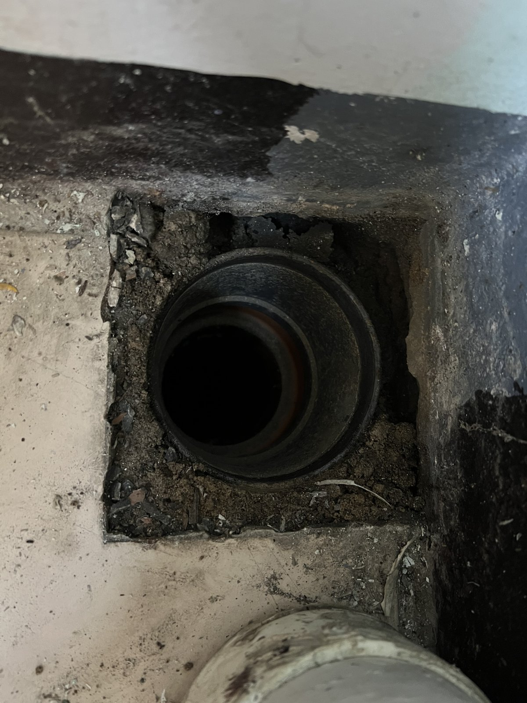
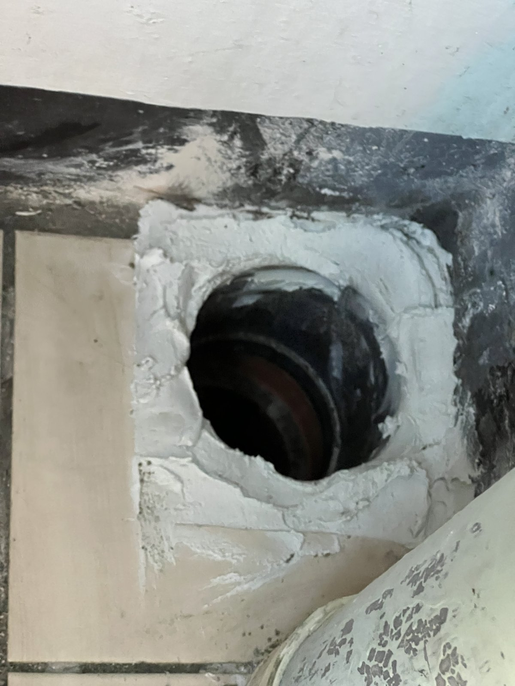
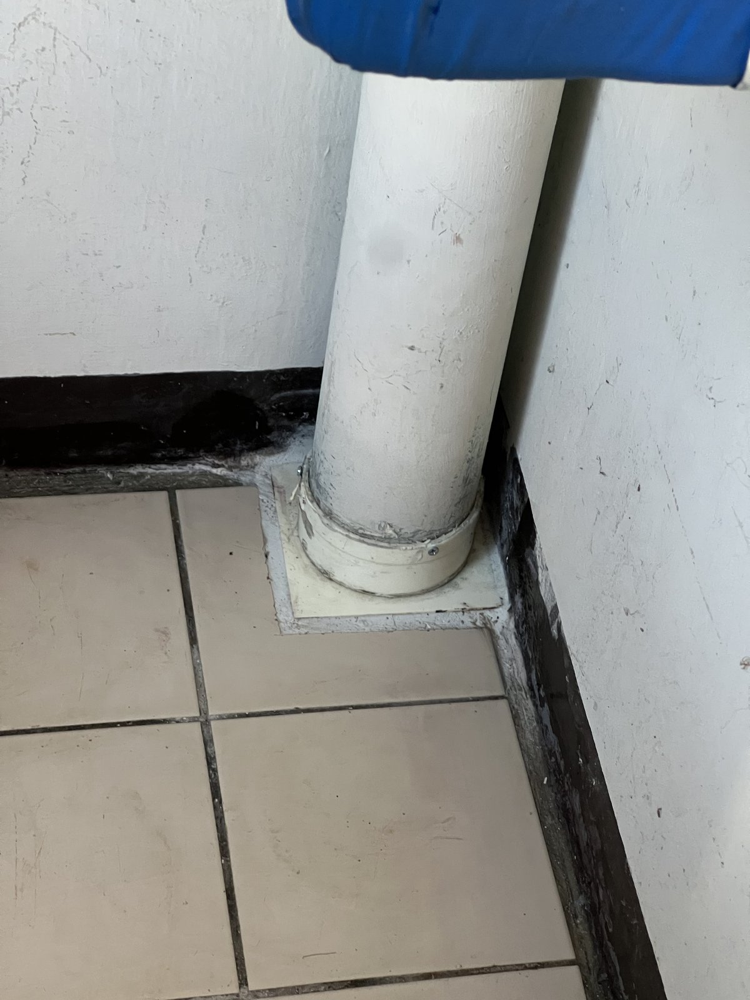
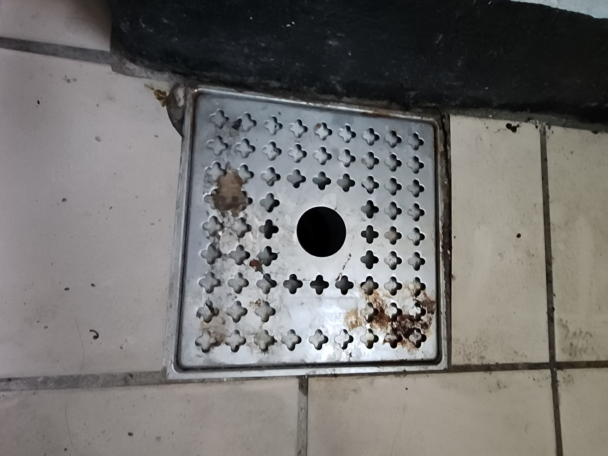
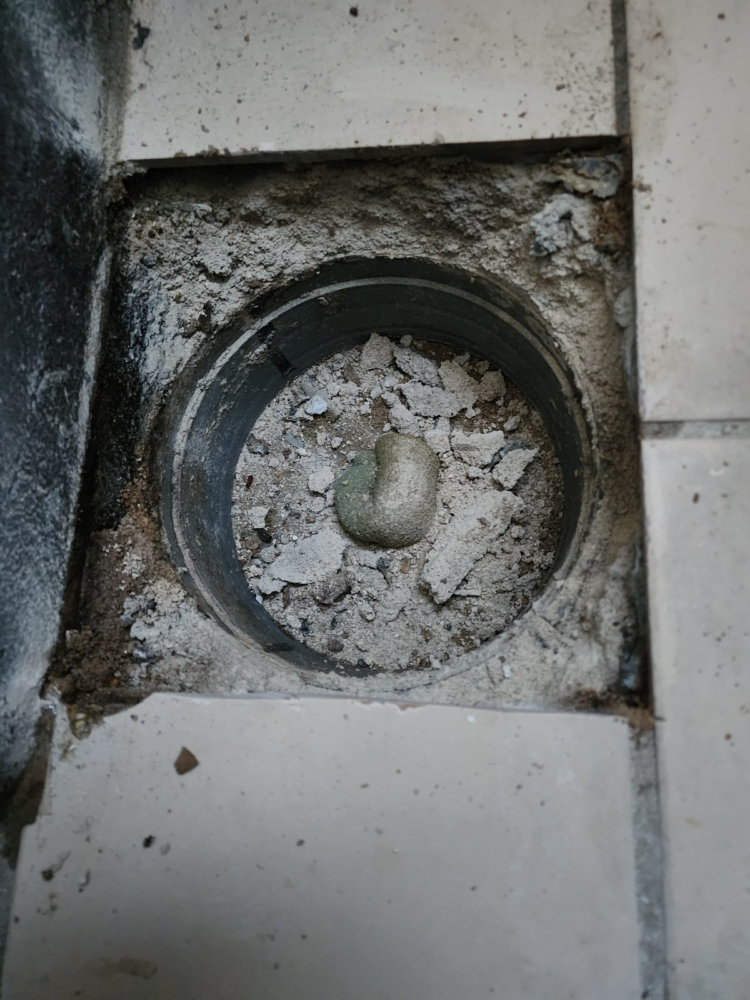
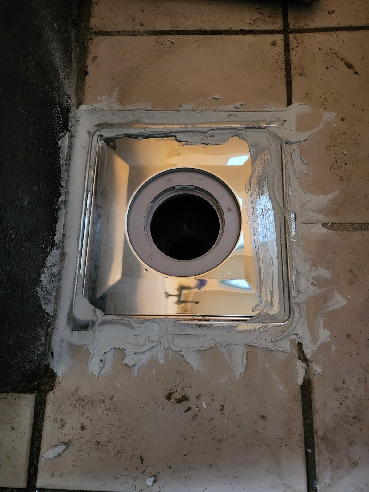

대전 신탄진 새여울아파트 세탁실 우수관·배수구 교체｜하부 연결부와 바닥 배수구를 함께

현장 작업 한눈에 보기
- 현장
- 대전 새여울아파트 · 세탁실
- 문제
- 우수관 하부 바닥 연결부
녹이 슨 세탁 배수구 - 작업
- 타일 절단·하부 부속 교체·우수관 재연결
세탁 배수구 몸체 교체·둘레 방수 마감 - 결과
- 두 곳 교체 후 모습 사진 확인
통수 확인 수치·작업시간은 미기재
대전 대덕구 신탄진 새여울아파트 세탁실 작업입니다. 오전에는 우수관 하부 바닥 연결부를 새 부속으로 바꾸고, 오후에는 세탁 배수구 몸체를 교체했습니다. 실제 사진 9장으로 순서대로 소개합니다.
1. 작업 전 세탁실 우수관
대전 대덕구 신탄진 새여울아파트 세탁실 작업입니다. 2026년 10월 22일 사진을 순서대로 소개합니다.
첫 사진은 작업 전 우수관 하부입니다. 벽 모서리를 따라 내려온 우수관이 바닥 타일 속으로 들어갑니다.

2. 하부 연결부 상태
가까이 보면 우수관이 바닥으로 들어가는 자리에 오래된 부속과 얼룩이 보입니다. 사진만으로 누수 원인을 단정하지는 않았습니다.

3. 둘레 타일을 잘라 연결부 드러내기
우수관을 분리하고 둘레 타일을 사각으로 잘라 바닥 속 연결부를 드러냈습니다. 선반과 창 주변은 비닐로 덮어 먼지를 막았습니다.

4. 새 바닥 연결 부속 설치
드러난 자리에 새 부속을 앉히고 둘레를 몰탈로 채웠습니다.

5. 우수관 재연결과 하부 마감
우수관을 새 부속에 다시 연결하고 하부를 흰색 커버로 마감했습니다. 첫 사진과 같은 자리입니다.

6. 오후 작업 — 세탁 배수구
같은 날 오후에는 세탁실 바닥 배수구를 손봤습니다. 작업 전 덮개에는 녹이 슬어 있었습니다.

7. 기존 배수구 몸체 철거
덮개와 기존 몸체를 걷어 내자 아래 배관 입구가 드러났습니다.

8. 새 배수구 몸체 설치
새 스테인리스 배수구 몸체를 맞추고 둘레를 메워 방수 마감했습니다.

9. 새 덮개까지 마무리
마지막으로 새 덮개를 덮었습니다. 6번 사진의 녹슨 덮개와 비교해 보세요.
10. 확인한 범위와 상담 안내
이번 기록은 사진으로 확인되는 공정 범위입니다. 통수 확인 수치와 총 작업시간은 자료가 없어 적지 않았습니다.
세탁실 바닥에 물이 고이거나 배수구 둘레에 물 자국이 보이면, 우수관 하부와 배수구를 각각 찍어 상담해 주세요.